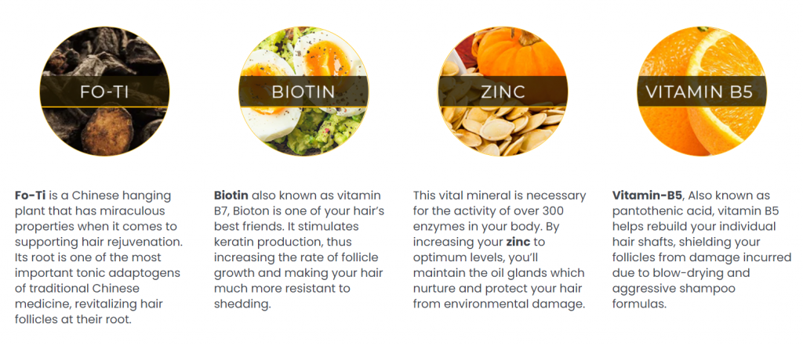
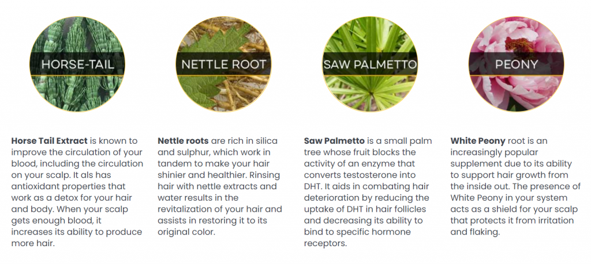

Natural Remedies For Hair Regrowth
It’s always best to try a natural approach first… because, with hair regrowth medications, there can be some serious side effects.
The great things about these natural remedies is that they are easy to find at your local store, and are relatively cheap.
Keep Your Hair Dry When You Shower
Fluoride, which the government adds to our water… causes significant hair loss. So, you may want to invest in one of those silly-looking shower caps…
Or you can replace your shower head with one that filters out fluoride.
Also, you might want to invest in a fluoride filter for drinking water because fluoride can also interfere with your thyroid… and a hypothyroid condition can also cause hair loss.
Shampoos With Sulphates
Sulphates destroy proteins… and 91% of your hair is made of proteins. Unfortunately, most shampoos contain sulphates (outrageous right?). So be sure to check labels next time you buy.
DHT Causes Hair Loss
What makes hair regrowth medication work?
Most hair regrowth medications block an enzyme called 5-ARD. This suppresses DHT.
DHT is a form of testosterone that tends to burn-out hair follicles.
DHT blocker medications come with a wide range of nasty side effects… so let’s investigate some natural DHT blockers instead!
Onion juice is a natural DHT blocker… dilute it with 50% water, then rub it into your scalp… let it sit for 15 minutes… then wash it out.
Green tea is also a natural DHT blocker. Make some green tea… dilute it by 50%, then rub it into your scalp… let it sit for 15 minutes… then wash it out.
Rosemary is a potent inhibitor of DHT. A recent study found that rosemary oil is as effective as the common hair growth medication ‘Rogaine’.
Rub rosemary oil into the scalp for 10 minutes (you may need to dilute it if it is concentrated, so check the label first), and then leave it in for 6-8 hours… then wash it out in the shower.
Are You Deficient In Zinc?
Many people are deficient in zinc… which causes hair loss. Eat more foods that are high in zinc such as red meat, eggs, seafood (oysters are very high in zinc).
Apple Cider Vinegar
Dilute apple cider vinegar (ACV), or it will burn your scalp… use 1/3 cup of ACV, with one liter of water and rub it into the scalp. By doing this, you’re cleaning out the pores which may be filled with sebum. Sebum is an oil that prevents the hair follicles from growing properly.
Also, ACV gives a great shine to your hair.
ACV can also help restore the pH levels of your scalp, which promotes your natural scalp microbiome… which supports hair growth.
Make Sure You’re Getting Enough Trace Elements
Trace elements are very important building blocks for growing a healthy, thick head of hair. Natural sea salt or Himalayan salt is high in trace elements.
Are You Getting Enough B Vitamins?
There are a lot of studies that link hair loss with a deficiency in B vitamins… nutritional yeast is really high in B vitamins (make sure its not fortified with synthetic vitamins).
Keep You Estrogen Levels In Check
High levels of estrogen can cause hair loss… that’s why women who are going through their menstrual cycle often experience loss of hair.
Although estrogen is a female hormone, it is found in men too. As men age, their testosterone drops, and estrogen levels rise.
A natural way to regulate your estrogen levels is to eat more cruciferous veggies…. Such as broccoli, cauliflower, and sea kelp (sea kelp is high in iodine, and iodine regulates estrogen).
Take Care Of Your Thyroid
If you have a slow thyroid, you’re likely experiencing thinning hair.
Selenium supports the thyroid.
The foods with the highest concentrations of selenium are brazil nuts, seafood, and sea kelp (iodine in sea kelp also supports the thyroid).
Side note: If you suffer from a thyroid condition, stay away from gluten… which is mainly found in grains.
Reduce The Effects Of Stress
Stress is a giant factor for hair loss. Stress will spike the stress hormone – cortisol. And cortisol is very damaging to proteins (your hair is 91% protein).
Increase vitamin D. Expose your skin to 10-15 minutes of unfiltered sunshine (no sunscreen). This is all you need to get your maximum dose of vitamin D… Which can help offset the effects of stress.
Get more sleep and exercise. This will help offset the effects of stress.
Intermittent Fasting & The Ketogenic Diet
People who have insulin resistance (high insulin levels)… often experience hair loss.
Reduce your insulin levels and restore insulin sensitivity by restricting your carbohydrate intake. The best way to do this is by intermittent fasting and/or the ketogenic diet.
Biotin Is Clinically Proven To Regrow Your Hair
If you look at the ingredients of most hair regrowth remedies, you’ll find a lot of them contain biotin. Biotin is a great hair regrowth promoter. Since our hair follicles are mostly protein, biotin will help your hair grow thicker and stronger while preventing hair loss.
Biotin is made by beneficial bacteria that come from the gut. This beneficial gut bacteria is called ‘the microbiome’… which is responsible for a long list of important body functions.
If you’ve got poor microbiome health, you’re likely overweight and have thin hair.
Probiotics promote the regrowth of the microbiome… foods high in probiotics are sauerkraut and kimchi. Drinks that are high in probiotics are kombucha and kefir.
The Best Combination Of Proven, Natural Ingredients For Hair Regrowth In One Pill


The Most Potent, Natural, Hair Regrowth Formula – With Proven Results!
==>Click Here To Try Out Folifort
Give your scalp the nutrients it needs to promote healthy follicle growth. Enjoy fuller, stronger, and shinier hair regardless of age.
Stronger, More Resilient Hair Follicles
The naturally sourced ingredients in this patented formula are designed to fortify and stimulate your existing hair follicles, making them much less likely to fall out no matter how vigorously you expose your hair to the elements.
How Does Folifort Work?
Scientists have found that the root cause of hair deterioration is a type of testosterone called DHT. This hormone builds up in your body as you get older. When its levels increase, it tends to burn out your hair follicles.
The reason why DHT keeps building up is because of an enzyme called 5-ARD. With the help of certain plants, vitamins, and minerals, your body can suppress this enzyme… which stops the production of DHT. This allows your hair to regrow thicker and stronger.
Folifort is the only supplement that contains the perfect balance you need to support and revitalize your hair from the inside out.
Am I Too Old For This To Work?
Definitely not! Folifort has worked wonders for men and women in their 30s, 40, 50s, and even 70s. Because it was extensively tested on volunteers from every demographic, the new and improved formula has proven to be effective regardless of age.
Is Folifort Safe?
Folifort is made out of natural, powerful ingredients, sourced from the best crops available.
Every capsule is manufactured here in the USA using a state-of-the-art FDA-registered and GMP-certified facility.
While we have received no reports of unwanted side-effects as of yet, for safety purposes we still recommend checking with your doctor before incorporating Folifort into your daily routine.
What If Folifort Doesn’t Work For Me?
Folifort has proven itself to be effective for the vast majority of people who take it. On the off-chance that your experience isn’t 100% satisfactory, you are protected by our special 60-day money-back guarantee, contingent only on the return of your unfinished bottles.